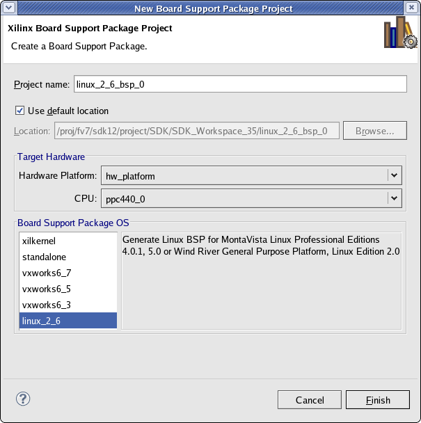

Board support packages (external tools)
In the New Board Support Package Project dialog box, you can create a new board support package project for external tools. To open this page, select File > New > Xilinx Board Support Package.
Select a name for the project, the CPU processor, and the Board Support Package OS type. You can use the default location, or specify a path for your project by deselecting the Use default location checkbox and typing the new path in the Location field .

The New Board Support Package Project page contains the following items:
| Name | Function |
|---|---|
| Name | Specify a name for the project. |
| Use default location | When this check box is selected, SDK creates the new project in the default workspace location. |
| Location | If Use default location is not selected, specify the location where the project is to be created. |
| Hardware Specification | Specify the hardware platform specification file if it has not been defined. |
| CPU | Select the processor for which you want to build the BSP. |
| Board Support Package OS | Select the BSP type from the available BSPs for the processor. |

Board support packages (external tools)

Creating a board support package (external tools)

Configure a BSP project for external tools
Copyright © 1995-2013 Xilinx, Inc. All rights reserved.